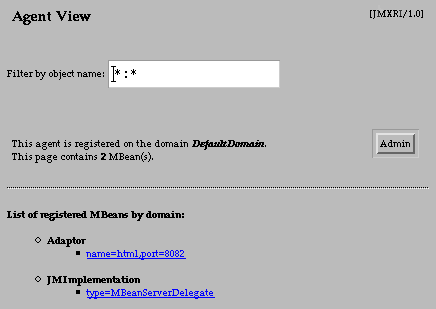

Tutorial
|
JMX Reference Implementation Tutorial |
![[ Previous ]](images/leftarrow.gif) Launching the Base Agent |
![[ Contents ]](images/uparrow.gif) Contents |
![[ Next ]](images/rightarrow.gif) The MBean View |
Your browser can now "manage" the base agent and its MBeans. The HTML protocol adaptor outputs HTML pages that represent the agent and its MBeans. The adaptor interacts with the MBean server, which is the heart of the JMX agent, in order to get information about the MBeans that it has registered. The adaptor also interprets the commands sent back by the buttons and fields appearing in your browser.The first page displayed by the HTML adaptor is always the agent view. It originally contains a list of all registered MBeans. In this base agent, there are two MBeans, one of which is the HTML adaptor. The MBean server delegate is not covered in this tutorial: see the JMX specification document for more information.
 The text field for filtering lets you modify the list of displayed MBeans. The filter string is initially
*:*, which means all registered MBeans. Futher use of the filter is covered in Filtering the MBean List. The agent's registered domain tells you the name of the default domain in this agent. In this case it is DefaultDomain: all MBeans created without a domain will be given this domain name. The number of MBeans on this page is just the number listed beneath the separator line.The "Admin" button is a link to the agent administration page; see Agent Administration topic for more information.
The MBean list contains all MBeans whose object name matches the filter string. Object names are unique for each MBean and consist of a domain name and list of key-value pairs (these are further covered in the Agent Administration topic). In this list, MBeans are sorted and grouped by their domain name. Each MBean name listed is an active link to the MBean view page for the corresponding object.
In the base agent you have just launched, the only MBeans are the functional components of the agent. In a real management solution, you would also have an MBean for each resource you want to manage through the agent. In such a case, you would create and register all the resource MBeans required during the initialization of your agent application.
After its initialization, the contents of a JMX agent are dynamic: new MBeans can be created and registered into new or existing domains and old MBeans can be removed. These changes can also affect the functionality of the agent: new agent services can be registered (or removed) as well. We will demonstrate examples of such dynamic management in this tutorial.
|
Launching the Base Agent |
Contents |
The MBean View |
Copyright 2000-2003
Sun Microsystems, Inc.,
All rights reserved.